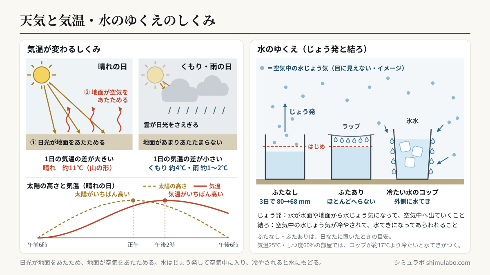
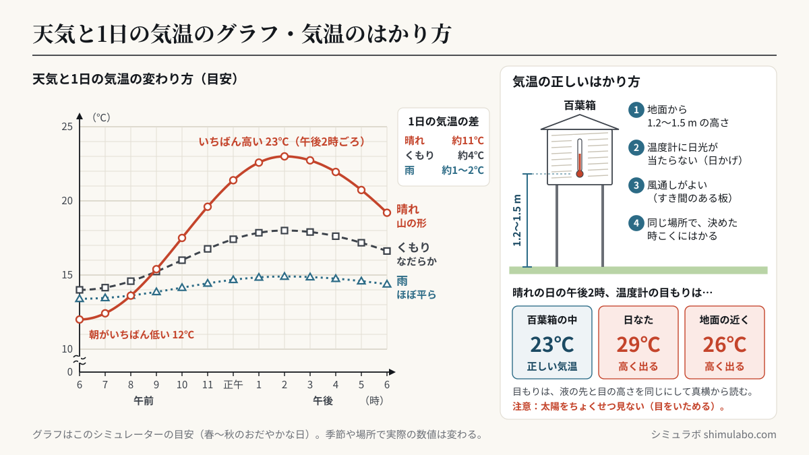

このシミュレーションでわかること
晴れの日は、朝は気温が低く、昼すぎ（午後2時ごろ）にいちばん高くなります。グラフにすると山の形になります。くもりや雨の日は、太陽の光が雲でさえぎられるので、1日の気温の変わり方が小さくなります。気温は、地面から1.2〜1.5 mの高さで、日光が直接当たらない、風通しのよい所（百葉箱の中など）ではかります。また、入れ物の水はじょう発して水じょう気になって空気中へ出ていくこと、空気中の水じょう気は冷やされると水てきになって現れる（結ろ）ことも確かめられます。
授業での使い方
導入：天気と気温を予想する
「晴れの日とくもりの日では、1日の気温の変わり方はちがうだろうか」と問いかけ、予想をノートにかかせてから「① 1日の気温（天気）」を開きます。はじめは「3つの天気をくらべる」をOFFにして晴れだけを見せ、グラフを指でなぞって時こくを動かすと、右の温度計の目もりが動きます。午前9時・正午・午後3時など、実際に観測する時こくの気温を読み取らせます。
展開：気温の正しいはかり方・天気によるちがい
右下の「日なた」「地面近く」をおすと、同じ時こくでも温度計の目もりが変わります。晴れた日の昼に日光が直接当たると気温より数℃高く出ることから、百葉箱を使う理由（日光が直接当たらない・風通しがよい・地面から1.2〜1.5 m）を考えさせます。次に「3つの天気をくらべる」をONにし、晴れ・くもり・雨のグラフの形のちがいを話し合います。
まとめ・発展：水のゆくえ
「② 水のゆくえ（じょう発）」で、ふたなしとふたあり（ラップ）の入れ物を何日か置いたときの水の高さを比べます。ふたなしの水だけがへること、ふたありはラップの内側に水てきがつくことから、水はじょう発して水じょう気になり、空気中へ出ていくことをまとめます。「③ 水てきがつく（結ろ）」では、氷水を入れたコップの外側に水てきがつく様子から、空気中に水じょう気があることを確かめます。
児童への問いの例
- 晴れの日に、気温がいちばん高くなるのは何時ごろだろう？太陽がいちばん高くなる正午ではないのはなぜだろう？
- 温度計に日光が直接当たると、目もりはどうなるだろう？気温を正しくはかるには、どんな場所がよいだろう？
- ふたをしなかった入れ物の水は、どこへいったのだろう？冷たい水を入れたコップの外側についた水てきは、どこから来たのだろう？
しくみ・解説






図はタップすると大きく表示されます。授業のプリント・スライド・板書計画に自由に使えます（出典「シミュラボ」とページのURLを添えてください）。
言葉の意味（1文で）
- 気温とは、地面から1.2〜1.5 mくらいの高さではかった、日かげの風通しのよい所の空気の温度のことです。
- 百葉箱（ひゃくようばこ）とは、気温を正しくはかるために、温度計を日光や雨から守り、風通しをよくした白い箱のことです。
- じょう発とは、水が水面や地面などから、目に見えない水じょう気になって空気中へ出ていくことです。
- 水じょう気とは、水がすがたを変えた気体で、目には見えず、空気の中にふくまれています。
- 結ろ（けつろ）とは、空気中の水じょう気が冷やされて、ふたたび水（水てき）になって現れることです。
天気と気温の早見表（このシミュレーターの目安）
| 天気 | 午前6時 | 午前9時 | 正午 | 午後2時 | 午後3時 | 午後6時 | 1日の差 | グラフの形 |
|---|---|---|---|---|---|---|---|---|
| 晴れ | 12℃ | 15℃ | 21℃ | 23℃ | 23℃ | 19℃ | 約11℃ | 山の形 |
| くもり | 14℃ | 15℃ | 17℃ | 18℃ | 18℃ | 17℃ | 約4℃ | なだらか |
| 雨 | 13℃ | 14℃ | 15℃ | 15℃ | 15℃ | 14℃ | 約1〜2℃ | ほぼ平ら |
春〜秋のおだやかな日をもとにした目安で、季節や場所、風によって実際の数値は変わります。どの天気でも同じ時こくに気温をはかってグラフに表すと、天気によって変わり方がちがうことがわかります。
気温のはかり方の早見表
| 気をつけること | 正しいはかり方 | 理由 |
|---|---|---|
| 高さ | 地面から1.2〜1.5 m | 地面の近くは、昼は地面の熱で高く、朝は低くなりやすい |
| 日光 | 直接当てない（日かげ・百葉箱の中） | 晴れた日の昼に日光が当たると、気温より数℃高く出る |
| 風通し | 風通しのよい所 | 熱がこもると正しい気温にならない |
| 場所・時こく | 同じ場所で、決めた時こくにはかる | くらべられるように（定点で観測） |
| 目もりの読み方 | 液の先と目の高さを同じにして真横から読む | 目もりの間のときは近い方を読む |
先生向けの補足：最高気温が午後2時ごろになるわけ
太陽の高さがいちばん高くなるのは正午ごろですが、太陽の光はまず地面をあたため、あたためられた地面が空気をあたためます。地面から空気へ熱が伝わるのに時間がかかり、また正午を過ぎても、しばらくは地面が受け取る熱の方が出ていく熱より多いため、気温は午後1〜2時ごろに最も高くなります。最低気温は、夜の間に地面から熱がにげ続けるため、日の出前後になります。このシミュレーターでは、午前6時に最低、午後2時に最高になるなめらかな曲線（目安）で表しています。
水のゆくえ（じょう発）の早見表
| 置く場所 | はじめ | 3日後 | 5日後 | 10日後 | ふたあり（ラップ） |
|---|---|---|---|---|---|
| 日なた（まどぎわ） | 80 mm | 68 mm | 60 mm | 40 mm | ほとんどへらない |
| 日かげ（ろうか） | 80 mm | 76 mm | 73 mm | 65 mm | ほとんどへらない |
ふたなしの入れ物は、日なたで1日に約4 mm、日かげで約1.5 mm 水面が下がるとした目安です。じょう発する量は、気温・日光・風・空気のしめり具合・水面の広さによって変わります。ふたをした入れ物では、じょう発した水じょう気が外に出られず、ラップの内側で冷やされて水てきにもどるので、水の量はほとんど変わりません。
結ろ（水てきがつく）の早見表
| 部屋の空気（気温25℃） | 水てきがつきはじめる温度 | コップの水の例 |
|---|---|---|
| かわいている（しつ度40%） | 約10℃ | 氷水（約5℃）ならつく |
| ふつう（しつ度60%） | 約17℃ | 冷たい水（約15℃）でもつく |
| しめっている（しつ度80%） | 約21℃ | 水道の水（約20℃）でもつく |
コップの外側の水てきは、コップの水がしみ出したものではなく、まわりの空気中の水じょう気が冷やされて水になったものです。寒い日の窓ガラスの内側のくもりや、冷ぞう庫から出したペットボトルの水てきも同じしくみです。
このシミュレーションで単純化していること
- 1日の気温は、天気ごとに決めたなめらかな曲線（目安）で、実際の観測値ではありません。実際には、雲の動きや風、前線の通過などで、雨の日に気温が下がり続けたり、夜に上がったりすることもあります。
- 「日なた」「地面近く」の温度計の目もりは、日光や地面の熱の影響を大まかに足した目安です。
- じょう発の速さは一定としています。水じょう気の粒の図は、目に見えない水じょう気をイメージとしてかいたものです。
- 結ろでは、コップの水の温度は変わらないものとしています。実際には、時間がたつとコップの水はあたたまり、水てきもつかなくなっていきます。
参考
- 文部科学省「小学校学習指導要領（平成29年告示）解説 理科編」第4学年 B（4）天気の様子（小学校学習指導要領解説）
- 気象庁「気象観測の手引き」（気温は地上約1.5 mの高さで、日射や雨を防ぎ風通しをよくしてはかる）
- 小学校理科の教科書（第4学年「天気と気温」「自然の中の水のすがた」の単元）
引用・転載について
本ページのシミュレーション結果・数値は、出典を明記いただければブログ・ニュース記事・SNS・授業や社内資料への引用を歓迎します。事前連絡は不要です。
出典：シミュラボ「天気と1日の気温のシミュレーター」 https://shimulabo.com/sims/tenki-kion/よくある質問
- 晴れの日の1日の気温はどう変わりますか？
- 朝（日の出のころ）がいちばん低く、昼すぎの午後2時ごろにいちばん高くなり、夕方にかけて下がります。グラフにすると山の形になります。春〜秋のおだやかな晴れの日では、1日の気温の差は10℃くらいになることがあります。
- くもりや雨の日の気温はどう変わりますか？
- 太陽の光が雲でさえぎられるので、昼でも気温があまり上がらず、1日の気温の変わり方が小さくなります。グラフはなだらか、雨の日はほぼ平らになります。
- 気温はどこではかればよいですか？
- 地面から1.2〜1.5 mくらいの高さで、日光が直接当たらない、風通しのよい所ではかります。学校では百葉箱の中の温度計を使います。日光が直接当たると、実際の気温より高い目もりになります。
- 気温がいちばん高くなるのが正午ではなく午後2時ごろなのはなぜですか？
- 太陽の光はまず地面をあたため、その地面が空気をあたためるので、空気があたたまるまでに時間がかかるからです。正午を過ぎても、しばらくは気温が上がり続けます。
- ふたをしない入れ物の水がへるのはなぜですか？
- 水が水面からじょう発して、目に見えない水じょう気になり、空気中へ出ていくからです。ふたをすると、水じょう気が外に出られず、ふたの内側で冷やされて水てきにもどるので、水はほとんどへりません。
- 冷たい水を入れたコップの外側に水てきがつくのはなぜですか？
- まわりの空気中にふくまれている水じょう気が、冷たいコップで冷やされて水にもどるからです（結ろ）。コップの中の水がしみ出したものではありません。